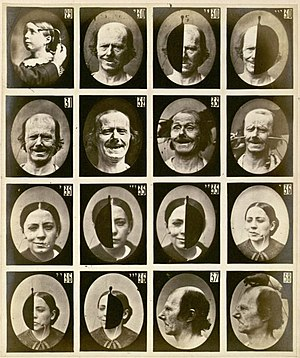

La expresión facial (también, facies, semblante), junto con la mirada, es uno de los medios más importantes para expresar emociones y estados de movimiento y no como un objeto estático se puede conseguir una mejor comprensión de lo que comunican los demás.
También se hacen juicios sobre la personalidad y otros rasgos de la gente en función de lo que se ve en sus caras. Por ejemplo, a las personas con facciones atractivas se les suele atribuir determinadas cualidades que pueden o no poseer en realidad.
No toda la comunicación que se transmite a través de la expresión facial es susceptible de ser percibida conscientemente por el interlocutor; sin embargo, sí se sabe que las impresiones que se obtienen de los otros también están influidas por los movimientos imperceptibles de su comunicación verbal.

Coreografía y elementos de la danza